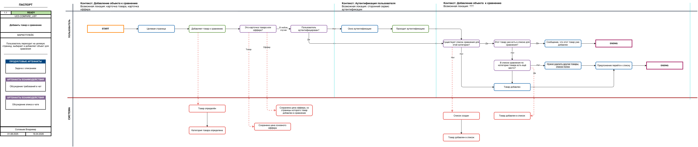
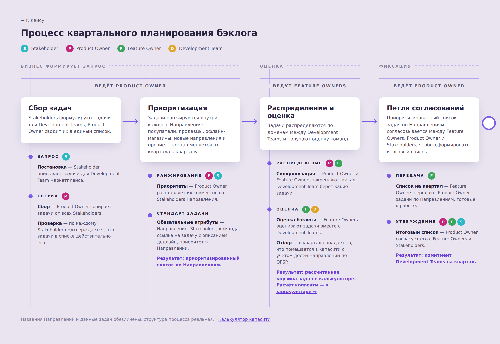

Бизнес / системный аналитик и Feature Owner в продуктовой разработке маркетплейса. Здесь — реальные кейсы к резюме: данные обезличены, логика и структура настоящие.

Use case и объектная модель в собственной нотации: каждый шаг сценария связан с записью в живой базе требований.
Открыть кейс →
Спроектировал и внедрил процесс планирования для кросс-функциональных команд и сделал калькулятор капасити. Lead time −29%.
Открыть кейс →